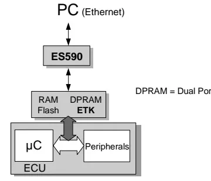
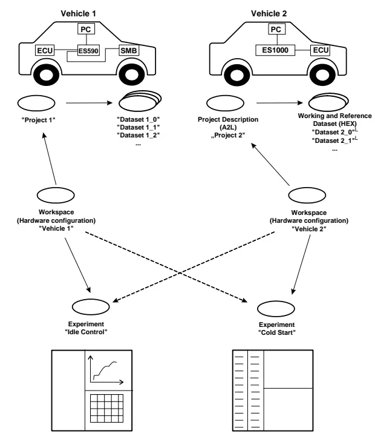
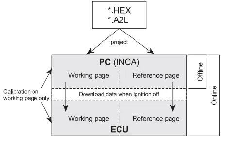

INCA — Measurement, Calibration and Flashing¶
INCA (INtegrated Calibration and Acquisition system) is ETAS's measurement and calibration environment. Where bus-level tools show traffic between ECUs, INCA provides access inside one — to intermediate software values that never appear on CAN at all.
By the end of this lesson you will be able to:
- Measure — read internal ECU signals (lambda, temperatures, state machines, contactor feedback, …) live while the ECU is running.
- Calibrate — change parameters of the ECU software (scalars, curves, maps) on the fly and watch the effect immediately.
- Flash — program new software and dataset versions into the ECU's flash memory — safely, and knowing how to recover when something goes wrong.
The walkthrough follows the INCA V7.1 "Getting Started" manual and the bootcamp demo session, which ran the full workflow on a real project: building a database from the software delivery, wiring up the hardware, measuring with the right raster, recording logs, flashing, and comparing calibration datasets. Each term is explained where it is first used.
Practice offline first
INCA works without a connected ECU (offline mode). Create workspaces, pick variables and build experiments offline on your own PC before working in a vehicle or at a HIL rig, where a mistake can affect a running powertrain.
Calibration basics: what a calibration system actually does¶
An ECU's control algorithms are full of adjustable values — a throttle characteristic curve, a temperature threshold, a gain factor. During development these calibration variables are tuned iteratively: measure the system's behavior, adjust the values, measure again. For that loop to work, the calibration system must answer three questions about every variable:
- Where is the value in the ECU's memory? (its address)
- How does raw memory content become a physical value? (the hex →
physical conversion rule, e.g.
speed_kmh = raw * 0.01) - How does the PC talk to the ECU? (interface, protocol, baud rate)
These are delivered together with the ECU software, in two files used throughout the calibration workflow:
| File | Contents |
|---|---|
*.a2l (ASAM-MCD-2MC description file) |
Address, data type, conversion rule and structure of every measurement and calibration variable — no values |
*.hex / *.s19 (program file, Intel HEX or Motorola S-record) |
The actual ECU program: code and data (the default values of all calibrations) |
A2L + HEX always travel together
Every software delivery includes at least one A2L and one HEX/S19 file, and they must match. If the A2L describes addresses from a different build than the HEX file you loaded, INCA will read and write the wrong memory locations — the classic source of "my calibration change did nothing" or of corrupted ECUs.
These formats and interfaces are standardized by ASAM-MCD (Association for Standardization of Automation and Measuring Systems — Measurement, Calibration and Diagnosis), which is why tools from different vendors can interoperate. The four standards worth recognizing by name:
| Standard | Role |
|---|---|
| ASAM-MCD-1a | Hardware interface to the ECU, e.g. CAN bus with CCP (CAN Calibration Protocol) |
| ASAM-MCD-1b | Driver interface between the calibration program on the PC and the calibration hardware |
| ASAM-MCD-2MC | The A2L file format describing variables, addresses and conversions |
| ASAM-MCD-3MC | Interface for test-bench automation systems to remote-control the calibration system |
Connecting to the ECU: parallel (ETK) vs. serial access¶
There are two fundamentally different ways to reach an ECU's memory; the available access method determines the measurement and calibration workflow.
ETK — the parallel emulator probe¶
The ETK (Emulator Test Probe) is an ECU-specific board that hooks directly onto the microcontroller's address and data buses and emulates (part of) the ECU's memory. The ECU cannot tell whether its program runs from its own flash or from the ETK. Only about 30 lines of extra code in the ECU software are needed for data acquisition via a table transferred from the calibration system, and the extra computing load is negligible.

The ETK provides the following capabilities:
- The ETK carries its own RAM and flash (plus dual-port RAM for simultaneous access by the microcontroller and the calibration tool), so you can edit calibrations in RAM while the engine is running, and switch between data versions instantly to compare the engine's response.
- Measured data can be acquired in several measurement rasters (loops) simultaneously, speed-synchronous if needed.
- The ETK board is microcontroller-specific (bus width, clock, memory size …) and connects to the ECU via adapters — everything else (PC software, calibration device, cables) is identical across projects, so the same setup applies across programs.
- The ETK has its own flash for storing calibrated data, so the ECU can start immediately without a download. Do not confuse it with the ECU's own flash.
This capability is also why a development ECU (open housing, ETK connector on the board) costs orders of magnitude more than a production ECU — in the bootcamp demo the instructor quoted roughly 50–100 € for a production unit versus up to ~15 000 € for a development ECU, depending on the microcontroller's complexity. A production ECU is closed: no ETK port, no memory emulation.
Serial calibration: CCP/XCP over CAN, K-Line¶
If no ETK is available (or only bus access is wanted), calibration runs over the vehicle's serial interfaces — CAN, LIN, FlexRay or K-Line — using a communication protocol implemented both in the ECU and in the calibration device (CCP, or its modern successor XCP). A small emulation memory inside the ECU plays the role of the ETK RAM, but it is much smaller, so typically only a subset of data can be emulated and a new program version must be flashed before its data portion can be edited.
The ETAS hardware chain¶
flowchart LR
PC["PC running INCA<br/>(Ethernet)"]
PC -->|"XETK host cable<br/>(single ECU)"| ECU["Development ECU<br/>with ETK"]
PC --> IF["ETAS interface module<br/>ES590 / ES89x / ES910"]
IF -->|"ETK/XETK"| ECU
IF -->|"CAN FD"| BUS1["Powertrain CAN"]
IF -->|"LIN"| BUS2["Body LIN"]- For one ECU only, an XETK host cable connects the ECU straight to the PC — no interface module needed.
- For several ECUs or mixed buses, use an interface module such as the ES891/ES892 (ETK + CAN FD + LIN ports) demonstrated in the lesson: one HOST port to the PC, two ETK ports for ECUs, and further CAN FD / LIN channels so that internal ECU signals and bus traffic land in the same log. If you only need CAN traffic, plain logging over the OBD socket with CANalyzer is enough — choose the hardware according to what your test actually needs to capture.
- Ethernet-based ETAS hardware gets its IP address from the ETAS IP Manager, configured once with the ETAS Network Manager (Windows Start menu → ETAS). If INCA cannot find Ethernet hardware, check that APIPA is enabled and that the firewall allows outgoing TCP connections to the ETAS network on ports 18001–18020 — a common cause of connection problems.
How INCA organizes data: database, project, datasets, workspace, experiment¶
Everything INCA knows lives in a database, managed by the Database Manager (DBM) — think of it as a file system for calibration data. You can (and should) keep several small databases rather than one huge one, for performance. The DBM stores these object types:
| Object | What it is |
|---|---|
| Project | Created by reading the A2L file; holds all description/management info (addresses, conversion rules) of one ECU program |
| Master dataset | The data portion of the first HEX file loaded for a project; write-protected, the "as delivered" reference |
| Working dataset | The copy you actually edit (the working page) |
| Reference dataset | A frozen copy used for comparison (the reference page) |
| Workspace | Bundles a project, the matching hardware configuration and experiments — one workspace per test environment (vehicle, bench, HIL) |
| Experiment | A saved screen layout: which variables are shown/recorded, with which instruments, rasters and display settings |

Two design ideas explain most of INCA's menus:
- Experiments are reusable across projects and workspaces. The same "Idle Control" experiment can run on the test bench and in the vehicle, as long as the variable names in the A2L have not changed. Workspaces capture the hardware differences; experiments capture the task.
- Import/Export moves objects between databases. To reuse an experiment a
colleague built, right-click the target folder in the DBM and import the
exported file — experiments travel as
*.expfiles.
Working page vs. reference page¶
Calibration is based on a two-page concept, mirrored both in INCA and in the ECU's emulation memory:

- All your edits go to the working page only. The reference page holds the original, unmodified data version and cannot be edited directly — so there is always a safe baseline to fall back to.
- You can switch between the two pages while the process is running — the fastest possible A/B comparison of how the engine or gearbox responds to the old and the new data.
- When a working dataset is finished and validated, it can be write-protected: it becomes the new reference dataset and INCA automatically creates a fresh working copy of it.
- The Memory Page Manager copies memory contents in any direction (PC ↔ ECU, working ↔ reference) to resolve mismatches between data versions.
- At the start of every session INCA compares project code and data with what is actually in the ECU. If they differ — e.g. someone flashed the ECU with another laptop — you must decide which side wins before calibrating.
Setting up a project step by step¶
This is the sequence demonstrated in the bootcamp session:
- Create a top folder in the DBM (right-click → new folder) to keep everything for your project together. INCA can host several projects and vehicles side by side.
- Add the software: right-click the folder → Add → A2L file first, then the matching HEX or S19 file when asked (an S19 is just the Motorola flavor of a HEX file — the calibration/program image). INCA takes a while to build the project; that is normal.
- Protect the original: rename the resulting dataset meaningfully, then right-click → freeze (set read-only). This frozen master dataset is your known-good baseline. To try changes, create a copy with a new name and modify the copy — never the frozen original.
- Create a workspace (right-click → Add workspace) and assign the project to it.
- Select the hardware: INCA asks which interface you use (e.g. an ES89x module, or direct XETK). Pick what is actually connected to your vehicle or simulator.
- Add an experiment: either create a new one, or import a colleague's
*.expfile (right-click the folder → Import). When a test owner hands you an experiment with predefined variables, importing it guarantees you measure exactly what they expect.
Hardware configuration and initialization¶
The Hardware Configuration Editor manages the link between your workspace and the physical hardware:
- Use the search button (magnifier) to find connected hardware over
Ethernet or USB. When several ECUs are connected, give each a meaningful
device name (e.g.
AVCU1) so status displays tell you at a glance which ECU is aligned and which is not. - Initialize the hardware with the Initialize hardware button or F3
(on laptops:
Fn+F3). Initialization aligns INCA's working and reference pages with the data actually in the ECU. - Two options from the demo are worth setting permanently (remember to hit
Apply):
- Initialize automatically — retries connection/alignment on its own;
- Auto-start behavior → always working page — preserves the calibrations you made in the working page across restarts instead of silently reverting to the reference data.
Flashing the ECU¶
Flash programming writes new software and dataset versions into the ECU and is started from the hardware window (the flash programming action). Practical points from the demo:
- Flash from the reference page (which you keep read-only) into the ECU flash, so you always program a known, frozen data version — not your half-edited working page.
- Choose the scope: code + data + calibration (full image — the recommended default, since the parts belong together) or calibration data only when the code has not changed and only a new dataset is being delivered.
- Flashing needs a translation/profile file that matches the software version (distributed with the release notes). If the software version or the vehicle variant changes, edit the profile selection accordingly — one file can carry profiles for several vehicle lines.
- The bootloader (a HEX file named in the release notes) only needs to be flashed when it actually changed. If you ever lose communication with an ECU completely — e.g. after flashing a wrong software — flashing the bootloader again is the recovery path.
- After OK, INCA resets the ECU and shows the flash progress and result; when it finishes, it starts the automatic alignment of working and reference pages.
Match the software to the vehicle
Flashing the wrong software variant can leave the ECU in a state where immobilizer pairing (the association between the body computer and the powertrain ECU) is missing. Know whether your dataset includes the immobilizer association for your vehicle before you flash.
The Experiment Environment¶
The experiment is where measurement and calibration happen — the main screen used during a test session. Its main building blocks:
Selecting variables¶
The Variable Selection dialog lists every measurement and calibration variable of the project. Practical tips:
- Use wildcard search (
*) liberally when you only remember part of a signal name. - Pick variables according to your test case: for a vehicle test you want at least the basic feedback signals in front of you — ignition/key status, drive-ready, contactor states, park-lock position — plus the internal ECU variables relevant to the feature under test, not only the CAN signals. A mismatch between a CAN signal and the internal variable that produced it is a typical finding that requires INCA's internal view; it cannot be detected with a bus-level tool alone.
- Variables can be set inactive: they stay in the experiment but are neither displayed nor recorded.
Rasters — the sampling time¶
Each variable is acquired in a raster, i.e. a sampling interval offered by the ECU (in the demo project: 25 ms as the fastest raster, then 50 ms, 125 ms, …; other ECUs/projects may offer 10 ms or 1 ms).
Choose the raster faster than your signal
If a signal evolves every 25 ms but you watch it in a 100 ms raster, you silently lose three out of four samples — a spike to a limit and back can be completely invisible. When in doubt, pick the fastest raster the ECU offers for the signals that matter, and keep the raster's load in mind (everything you add costs bandwidth).
You can change a variable's raster afterwards via the Measure Rate / display configuration, and assign variables to recorders in the Variable Configuration.
Instruments and layers¶
Variables are displayed in measure instruments (numeric displays, YT and XY oscilloscopes, …) and edited in calibration instruments/editors (tables, curve and map editors). To keep a crowded experiment usable, spread the instruments over layers (tabbed pages of the experiment window) — e.g. one layer for powertrain feedback, one for the feature under test, one for calibrations.
Recording measurement data¶
- Press the record button during measurement to start logging; the status bar shows the running record time and the maximum possible log duration (limited by free disk space and the number/width of recorded signals — the offline demo showed ~7 h of headroom; expect less on a loaded real setup).
- Configure file storage in the measure configuration before recording:
path, filename pattern, and metadata such as user, company, project and
vehicle (available as variables like
&[USER],&[PROJECT]). - Filename discipline (the convention recommended in the demo): start with the date, then project/vehicle, facility (vehicle vs. HIL/simulator — it changes how much the log is worth), software version, test number and result (OK/NOK). Anyone receiving your log months later can reconstruct exactly what was tested, where, and on which software. Use the auto-increment option for checklist-style test runs (test1, test2, …).
- Triggers let you record only around relevant events instead of continuous logging: define a condition (e.g. a DTC is set, a reset occurs, a threshold crossing) with the signal logic, plus how much pre-trigger and post-trigger time to keep (e.g. 30 min before and after the event). For ordinary manual testing on a simulator, triggers are simply switched off.
- To also log calibration changes, add the calibration variables to the recorder configuration before starting the recording.
- When you stop, INCA offers to save or discard the log and shows a summary with the software and dataset info — keep that metadata with the file; you will need it when analyzing offline.
Calibrating in the experiment¶
- The status bar shows the ECU connection state and whether working and reference pages differ (a checksum warning indicates the pages must be aligned before calibrating).
- You can only edit calibrations on the working page — if an editor refuses your input, check which page is active, switch to the working page (and align pages first if needed).
- Useful keys in calibration editors: F7 increments, F6 decrements the selected value, Ctrl+U discards all changes and resets to the reference page values.
- A calibrator may send you a set of values to try as a DCM or CSV file: load it via Variables → read all calibrations from file; INCA applies the values to the working page and immediately shows the difference against the reference page.
Comparing datasets with the Calibration Data Manager (CDM)¶
The CDM is the offline tool for comparing datasets — it shows what changed between calibration releases without manually comparing HEX files:
- Choose a source dataset and one or more comparison datasets (from the database or from file).
- Pick the action: List (dump selected calibration values), Compare (differences between datasets) or Copy (transfer values).
- Select the variables of interest, run the compare, and filter the result by equal or different.
- Export the result — the demo produced an HTML report listing each
calibration with its value in the master dataset and in the compared one
(output formats include
*.txt,*.htm,*.pdf,*.csv,*.dcm,*.cdfx,*.xml).
Offline analysis with MDA¶
Recorded INCA logs are analyzed in the Measure Data Analyzer (MDA), the ETAS post-processing tool:
- Open MDA, create a new configuration, and add the measure file recorded in INCA.
- In the Variable Explorer, pick the signals you want and their display mode, then drag & drop them onto an oscilloscope window.
- For readability, select several signals, right-click → move to individual strip, then zoom to fit.
- Use the cursor/measure functions to read signal values and the difference between two points in time — the standard way to quantify "how long did the contactor take to close" or "how big was the voltage dip".
Note
When INCA asks about generating extra per-layer files for MDA, you can uncheck that option — one clean measure file per recording is easier to archive and share.
Keyboard shortcuts worth memorizing¶
| Key | Action |
|---|---|
F1 |
Context-sensitive help |
F3 |
Initialize hardware (laptops: Fn+F3) |
F4 |
Display configuration |
F6 / F7 |
Decrement / increment calibration value |
Ctrl+U |
Reset calibrations to reference page values |
Ctrl+F3 |
Open Hardware Configuration Editor |
Ctrl+F5 |
Open Experiment Environment |
Ctrl+Z / Ctrl+Y |
Undo / redo |
When something misbehaves, open the Monitor window first: INCA logs every action, warning and error there, and support requests start from ? → Log Files (which can bundle the whole workspace into a ZIP for ETAS support).
Key takeaways
- INCA = measure internal ECU signals, calibrate parameters live, flash software — all based on the A2L (addresses/conversions) + HEX/S19 (code+data) pair; they must match the ECU's software exactly.
- ETK = parallel memory emulation on a development ECU (fast, multi-raster, calibration while running); serial calibration uses CCP/XCP over CAN or K-Line.
- Data model: project + datasets describe the software, the workspace describes the hardware, the experiment describes the measurement task — experiments are reusable across all of them.
- Edits go to the working page only; the reference page is the frozen comparison baseline, and flash programming should run from the reference page.
- Pick the raster faster than the fastest signal you care about, or you will lose samples without noticing.
- Name logs with date, project, facility, software version, test number and result; use triggers with pre/post time to capture rare events.
- CDM compares datasets and exports HTML reports; MDA analyzes the recorded measure files offline.
Where this leads
You will deepen the INCA workflow in the follow-up INCA 2 lesson and practice it hands-on in the INCA exercises. For pure bus-level logging (no ECU internals), use CANalyzer; for the diagnostic side of ECU access (DTCs, UDS services), see Diagnosis.
Sub-sections¶
Source material¶
This article was distilled from the academy lesson materials:
- Academy Kineton Format INCA MDA — PDF, 3.6 MB
- ETAS manual — PDF, 3.9 MB
Downloads¶
- INCA — 200.0 KB
- INCA — 44.7 KB
- INCA — 35.6 KB
- INCA — 40.2 KB
- INCA MDA — 11.8 KB
- INCA MDA — 2.8 KB
- INCA MDA — 2.3 KB
- INCA MDA — 2.6 KB
- INCA (lecture transcript) — 28.6 KB
- INCA MDA (lecture transcript) — 1.9 KB